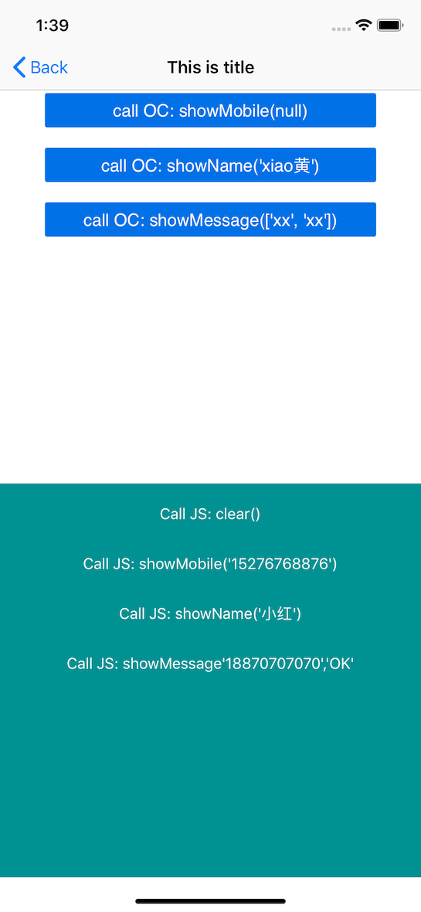

WKWebView
WKWebView是iOS8 出来的浏览器控件, 用来取代UIWebView，使用时import：<WebKit/WebKit.h>
Core class:
- WKWebView
- WKWebViewConfiguration
- WKUserScript
- WKUserContentController
- WKWebsiteDataStore
2 delegate:
- WKNavigationDelegate
- WKUIDelegate
层次结构
- WKWebView
- WKWebViewConfiguration
- WKUserContentController *userContentController
- WKPreferences *preferences
- WKWebsiteDataStore *websiteDataStore
- WKHTTPCookieStore *httpCookieStore
- WKUIDelegate
- WKNavigationDelegate
- WKWebViewConfiguration
WKWebView
============================ 常用属性 ============================
// 导航代理
@property (nullable, nonatomic, weak) id <WKNavigationDelegate> navigationDelegate;
// UI代理
@property (nullable, nonatomic, weak) id <WKUIDelegate> UIDelegate;
// 页面标题, 一般使用KVO动态获取
@property (nullable, nonatomic, readonly, copy) NSString *title;
// 页面加载进度, 一般使用KVO动态获取
@property (nonatomic, readonly) double estimatedProgress;
// 可返回的页面列表, 已打开过的网页, 有点类似于navigationController的viewControllers属性
@property (nonatomic, readonly, strong) WKBackForwardList *backForwardList;
// 页面url
@property (nullable, nonatomic, readonly, copy) NSURL *URL;
// 页面是否在加载中
@property (nonatomic, readonly, getter=isLoading) BOOL loading;
// 是否可返回
@property (nonatomic, readonly) BOOL canGoBack;
// 是否可向前
@property (nonatomic, readonly) BOOL canGoForward;
// WKWebView继承自UIScrollView, 所以如果想设置scrollView的一些属性, 需要对此属性进行配置
@property (nonatomic, readonly, strong) UIScrollView *scrollView;
// 是否允许手势左滑返回上一级, 类似导航控制的左滑返回
@property (nonatomic) BOOL allowsBackForwardNavigationGestures;
// 自定义UserAgent, 会覆盖默认的值, iOS 9之后有效
@property (nullable, nonatomic, copy) NSString *customUserAgent
============================ 常用方法 ============================
// 带配置信息的初始化方法，configuration表示配置信息对象
- (instancetype)initWithFrame:(CGRect)frame configuration:(WKWebViewConfiguration *)configuration
// 加载请求
- (nullable WKNavigation *)loadRequest:(NSURLRequest *)request;
// 加载HTML
- (nullable WKNavigation *)loadHTMLString:(NSString *)string baseURL:(nullable NSURL *)baseURL;
// 返回上一级
- (nullable WKNavigation *)goBack;
// 前进下一级, 需要曾经打开过, 才能前进
- (nullable WKNavigation *)goForward;
// 刷新页面
- (nullable WKNavigation *)reload;
// 根据缓存有效期来刷新页面
- (nullable WKNavigation *)reloadFromOrigin;
// 停止加载页面
- (void)stopLoading;
// 执行JavaScript代码
- (void)evaluateJavaScript:(NSString *)javaScriptString completionHandler:(void (^ _Nullable)(_Nullable id, NSError * _Nullable error))completionHandler;
WKWebViewConfiguration
// 内容交互控制器，自己注入JS代码及JS调用原生方法注册，在delloc时需要移除注入
@property (nonatomic, strong) WKUserContentController *userContentController;
// 用户选择网页内容的粒度，默认值WKSelectionGranularityDynamic
@property (nonatomic) WKSelectionGranularity selectionGranularity;
// 网页加载时的偏好设置，比如是否通过js自动打开新的窗口
@property (nonatomic, strong) WKPreferences *preferences;
// 网站数据储存对象，这个属性根据自己需求选择不设置（使用默认）或自己设置，使用这个对象可以设置不存储任何数据和移除/获取缓存数据, [WKWebsiteDataStore defaultDataStore], [WKWebsiteDataStore nonPersistentDataStore]; [WKWebsiteDataStore defaultDataStore].httpCookieStore
@property (nonatomic, strong) WKWebsiteDataStore *websiteDataStore API_AVAILABLE(macosx(10.11), ios(9.0));
// 是否允许播放媒体文件
@property (nonatomic) BOOL allowsAirPlayForMediaPlayback
// 需要用户来操作才能播放的多媒体类型
@property (nonatomic) WKAudiovisualMediaTypes mediaTypesRequiringUserActionForPlayback
// 是使用h5的视频播放器在线播放, 还是使用原生播放器全屏播放
@property (nonatomic) BOOL allowsInlineMediaPlayback;
// 把硬件的一些信息告诉浏览器, 如：self.yourSite.customUserAgent=@"Mozilla/4.0 (compatible; MSIE 7.0; Windows NT 6.3; Trident/7.0; .NET4.0E; .NET4.0C)";
@property (nullable, nonatomic, copy) NSString *applicationNameForUserAgent API_AVAILABLE(macosx(10.11), ios(9.0));
// 是否在加载完之后再渲染网页
@property (nonatomic) BOOL suppressesIncrementalRendering;
// 布尔值, 确定wkwebView对象是否总是允许网页缩放
@property (nonatomic) BOOL ignoresViewportScaleLimits API_AVAILABLE(ios(10.0));
// 网页内容探测, 默认：WKDataDetectorTypeNone; WKDataDetectorTypePhoneNumber， WKDataDetectorTypeLink， ...
@property (nonatomic) WKDataDetectorTypes dataDetectorTypes API_AVAILABLE(ios(10.0));
WKUserContentController
WKUserContentController 是JavaScript与原生进行交互的桥梁, 主要使用的方法有:
// 注入JavaScript与原生交互协议
// JS 端可通过 window.webkit.messageHandlers.<name>.postMessage(<messageBody>) 发送消息
- (void)addScriptMessageHandler:(id <WKScriptMessageHandler>)scriptMessageHandler name:(NSString *)name;
// 移除注入的协议, 在dealloc方法中调用
- (void)removeScriptMessageHandlerForName:(NSString *)name;
// 通过WKUserScript注入需要执行的JavaScript代码
- (void)addUserScript:(WKUserScript *)userScript;
// 移除所有注入的JavaScript代码
- (void)removeAllUserScripts;
使用WKUserContentController注入的交互协议, 需要遵循WKScriptMessageHandler协议, 在其协议方法中获取JavaScript端传递的事件和参数:
- (void)userContentController:(WKUserContentController *)userContentController didReceiveScriptMessage:(WKScriptMessage *)message;
WKScriptMessage包含了传递的协议名称及参数, 主要从下面的属性中获取:
// 协议名称, 即上面的add方法传递的name
@property (nonatomic, readonly, copy) NSString *name;
// 传递的参数
@property (nonatomic, readonly, copy) id body;
WKUserScript
WKUserScript用于往加载的页面中添加额外需要执行的JavaScript代码, 主要是一个初始化方法:
/*
source: 需要执行的JavaScript代码
injectionTime: 加入的位置, 是一个枚举
typedef NS_ENUM(NSInteger, WKUserScriptInjectionTime) {
WKUserScriptInjectionTimeAtDocumentStart,
WKUserScriptInjectionTimeAtDocumentEnd
} API_AVAILABLE(macosx(10.10), ios(8.0));
forMainFrameOnly: 是加入所有框架, 还是只加入主框架
*/
- (instancetype)initWithSource:(NSString *)source injectionTime:(WKUserScriptInjectionTime)injectionTime forMainFrameOnly:(BOOL)forMainFrameOnly;
WKUIDelegate
The WKUIDelegate class provides methods for presenting native user interface elements on behalf of a webpage.
WKUIDelegate这个类提供了一些方法，作用是为了在webpage上可以显示一些native的交互元素。
比如使用系统的弹框来替换JS中的一些弹框。
/**
webView中弹出警告框时调用, 只能有一个按钮
@param webView webView
@param message 提示信息
@param frame 可用于区分哪个窗口调用的
@param completionHandler 警告框消失的时候调用, 回调给JS
*/
- (void)webView:(WKWebView *)webView runJavaScriptAlertPanelWithMessage:(NSString *)message initiatedByFrame:(WKFrameInfo *)frame completionHandler:(void (^)(void))completionHandler {
UIAlertController *alert = [UIAlertController alertControllerWithTitle:@"警告" message:message preferredStyle:(UIAlertControllerStyleAlert)];
UIAlertAction *ok = [UIAlertAction actionWithTitle:@"我知道了" style:(UIAlertActionStyleDefault) handler:^(UIAlertAction * _Nonnull action) {
completionHandler();
}];
[alert addAction:ok];
[self presentViewController:alert animated:YES completion:nil];
}
/** 对应js的confirm方法
webView中弹出选择框时调用, 两个按钮
@param webView webView description
@param message 提示信息
@param frame 可用于区分哪个窗口调用的
@param completionHandler 确认框消失的时候调用, 回调给JS, 参数为选择结果: YES or NO
*/
- (void)webView:(WKWebView *)webView runJavaScriptConfirmPanelWithMessage:(NSString *)message initiatedByFrame:(WKFrameInfo *)frame completionHandler:(void (^)(BOOL result))completionHandler {
UIAlertController *alert = [UIAlertController alertControllerWithTitle:@"请选择" message:message preferredStyle:(UIAlertControllerStyleAlert)];
UIAlertAction *ok = [UIAlertAction actionWithTitle:@"同意" style:(UIAlertActionStyleDefault) handler:^(UIAlertAction * _Nonnull action) {
completionHandler(YES);
}];
UIAlertAction *cancel = [UIAlertAction actionWithTitle:@"不同意" style:(UIAlertActionStyleCancel) handler:^(UIAlertAction * _Nonnull action) {
completionHandler(NO);
}];
[alert addAction:ok];
[alert addAction:cancel];
[self presentViewController:alert animated:YES completion:nil];
}
/** 对应js的prompt方法
webView中弹出输入框时调用, 两个按钮 和 一个输入框
@param webView webView description
@param prompt 提示信息
@param defaultText 默认提示文本
@param frame 可用于区分哪个窗口调用的
@param completionHandler 输入框消失的时候调用, 回调给JS, 参数为输入的内容
*/
- (void)webView:(WKWebView *)webView runJavaScriptTextInputPanelWithPrompt:(NSString *)prompt defaultText:(nullable NSString *)defaultText initiatedByFrame:(WKFrameInfo *)frame completionHandler:(void (^)(NSString * _Nullable result))completionHandler {
UIAlertController *alert = [UIAlertController alertControllerWithTitle:@"请输入" message:prompt preferredStyle:(UIAlertControllerStyleAlert)];
[alert addTextFieldWithConfigurationHandler:^(UITextField * _Nonnull textField) {
textField.placeholder = @"请输入";
}];
UIAlertAction *ok = [UIAlertAction actionWithTitle:@"确定" style:(UIAlertActionStyleDefault) handler:^(UIAlertAction * _Nonnull action) {
UITextField *tf = [alert.textFields firstObject];
completionHandler(tf.text);
}];
UIAlertAction *cancel = [UIAlertAction actionWithTitle:@"取消" style:(UIAlertActionStyleCancel) handler:^(UIAlertAction * _Nonnull action) {
completionHandler(defaultText);
}];
[alert addAction:ok];
[alert addAction:cancel];
[self presentViewController:alert animated:YES completion:nil];
}
WKNavigationDelegate
// 决定导航的动作，通常用于处理跨域的链接能否导航。
// WebKit对跨域进行了安全检查限制，不允许跨域，因此我们要对不能跨域的链接单独处理。
// 但是，对于Safari是允许跨域的，不用这么处理。
// 这个是决定是否Request
- (void)webView:(WKWebView *)webView decidePolicyForNavigationAction:(WKNavigationAction *)navigationAction decisionHandler:(void (^)(WKNavigationActionPolicy))decisionHandler{
// 在发送请求之前，决定是否跳转
decisionHandler(WKNavigationActionPolicyAllow);
}
// 是否接收响应
- (void)webView:(WKWebView *)webView decidePolicyForNavigationResponse:(WKNavigationResponse *)navigationResponse decisionHandler:(void (^)(WKNavigationResponsePolicy))decisionHandler{
// 在收到响应后，决定是否跳转和发送请求之前那个允许配套使用
decisionHandler(WKNavigationResponsePolicyAllow);
}
// 用于授权验证的API，与AFN、UIWebView的授权验证API是一样的
// Called when the web view needs to respond to an authentication challenge.
// If you do not implement this method, the web view will respond to the authentication challenge with the NSURLSessionAuthChallengeRejectProtectionSpace disposition.
- (void)webView:(WKWebView *)webView didReceiveAuthenticationChallenge:(NSURLAuthenticationChallenge *)challenge completionHandler:(void (^)(NSURLSessionAuthChallengeDisposition disposition, NSURLCredential *__nullable credential))completionHandler {
completionHandler(NSURLSessionAuthChallengePerformDefaultHandling ,nil);
}
// main frame的导航开始请求时调用
- (void)webView:(WKWebView *)webView didStartProvisionalNavigation:(null_unspecified WKNavigation *)navigation{
}
// 当main frame接收到服务重定向时调用
- (void)webView:(WKWebView *)webView didReceiveServerRedirectForProvisionalNavigation:(null_unspecified WKNavigation *)navigation{
// 接收到服务器跳转请求之后调用
}
// 当main frame开始加载数据失败时，会回调
- (void)webView:(WKWebView *)webView didFailProvisionalNavigation:(null_unspecified WKNavigation *)navigation withError:(NSError *)error {
}
// 当内容开始返回时调用
- (void)webView:(WKWebView *)webView didCommitNavigation:(null_unspecified WKNavigation *)navigation{
}
//当main frame导航完成时，会回调
- (void)webView:(WKWebView *)webView didFinishNavigation:(null_unspecified WKNavigation *)navigation{
// 页面加载完成之后调用
}
// 当main frame最后下载数据失败时，会回调
- (void)webView:(WKWebView *)webView didFailNavigation:(null_unspecified WKNavigation *)navigation withError:(NSError *)error {
}
// 当web content处理完成时，会回调
- (void)webViewWebContentProcessDidTerminate:(WKWebView *)webView {
}
WKWebsiteDataStore
WKWebsiteDataStore 提供了网站所能使用的数据类型，包括 cookies，硬盘缓存，内存缓存活在一些WebSQL的数据持久化和本地持久化。可通过 WKWebViewConfiguration 类的属性 websiteDataStore 进行相关的设置
// 默认的data store
+ (WKWebsiteDataStore *)defaultDataStore;
// 如果为webView设置了这个data Store，则不会有数据缓存被写入文件
// 当需要实现隐私浏览的时候，可使用这个
+ (WKWebsiteDataStore *)nonPersistentDataStore;
// 是否是可缓存数据的，只读
@property (nonatomic, readonly, getter=isPersistent) BOOL persistent;
// 获取所有可使用的数据类型
+ (NSSet<NSString *> *)allWebsiteDataTypes;
// 查找指定类型的缓存数据
// 回调的值是WKWebsiteDataRecord的集合
- (void)fetchDataRecordsOfTypes:(NSSet<NSString *> *)dataTypes completionHandler:(void (^)(NSArray<WKWebsiteDataRecord *> *))completionHandler;
// 删除指定的纪录
// 这里的参数是通过上面的方法查找到的WKWebsiteDataRecord实例获取的
- (void)removeDataOfTypes:(NSSet<NSString *> *)dataTypes forDataRecords:(NSArray<WKWebsiteDataRecord *> *)dataRecords completionHandler:(void (^)(void))completionHandler;
// 删除某时间后修改的某类型的数据
- (void)removeDataOfTypes:(NSSet<NSString *> *)websiteDataTypes modifiedSince:(NSDate *)date completionHandler:(void (^)(void))completionHandler;
// 保存的HTTP cookies
@property (nonatomic, readonly) WKHTTPCookieStore *httpCookieStore
注意事项：参照 https://blog.csdn.net/u012413955/article/details/79783282
关于Data types:
Returns a set of all available website data types
获取dataStore中所有的数据类型:
NSLog(@"%@", [WKWebsiteDataStore allWebsiteDataTypes]);
{(
WKWebsiteDataTypeDiskCache, // 硬盘缓存
WKWebsiteDataTypeOfflineWebApplicationCache, // 离线应用缓存
WKWebsiteDataTypeMemoryCache, // 内存缓存
WKWebsiteDataTypeLocalStorage, // localStorage,cookie的一个兄弟
WKWebsiteDataTypeFetchCache,
WKWebsiteDataTypeCookies, // cookie
WKWebsiteDataTypeSessionStorage, // session, HTML会话存储
WKWebsiteDataTypeIndexedDBDatabases, // 索引数据库
WKWebsiteDataTypeWebSQLDatabases, // 数据库
WKWebsiteDataTypeServiceWorkerRegistrations
)}
移除某些特定的数据类型:
-(void)removeDataOfTypes:(NSSet<NSString*>*)dataTypes forDataRecords:(NSArray<WKWebsiteDataRecord *> *)dataRecords completionHandler:(void (^)(void))completionHandler;
移除指定时期的特定的数据类型:
- (void)removeDataOfTypes:(NSSet<NSString*> *)websiteDataTypes modifiedSince:(NSDate *)date completionHandler:(void (^)(void))completionHandler;
获取dataRecord示例：
- (void)viewDidLoad {
[super viewDidLoad];
WKWebViewConfiguration *config = [[WKWebViewConfiguration alloc] init];
self.webView = [[WKWebView alloc] initWithFrame:self.view.bounds configuration:config];
[self.view addSubview:self.webView];
// WKWebsiteDataRecord
[config.websiteDataStore fetchDataRecordsOfTypes:[NSSet setWithObjects:WKWebsiteDataTypeLocalStorage, nil] completionHandler:^(NSArray<WKWebsiteDataRecord *> * _Nonnull recordList) {
for (WKWebsiteDataRecord *record in recordList) {
NSLog(@"%@----%@", record.displayName, record.dataTypes);
/**
baidu.com----{(
WKWebsiteDataTypeLocalStorage
)}
*/
}
}];
NSString *urlStr = @"http://www.baidu.com"; // 注：对于加载非https的url, 须在Info.plist中添加App Transport Security Settings的Allow Arbitrary Loads为YES
[self.webView loadRequest:[NSURLRequest requestWithURL:[NSURL URLWithString:urlStr]]];
}
从以上可以看出，苹果暴露了各种缓存的获取方法和移除方法。但是没有给设置方法。而且cookie并不突出。和其他兄弟一样。所以苹果的本意还是不希望原生直接干预cookie的设置。
但是从iOS11开始，苹果放开了cookie的操作权限。它在WKWebsiteDataStore中暴露了一个WKHTTPCookieStore类型的属性专门用来管理cookie。
WKHTTPCookieStore(iOS 11.0)
WKWebViewConfiguration *config = ...;
config.websiteDataStore.httpCookieStore
/*! 查找所有已存储的cookie
*/
- (void)getAllCookies:(void (^)(NSArray<NSHTTPCookie *> *))completionHandler;
/*! 保存一个cookie, 保存成功后, 会走一次回调方法
*/
- (void)setCookie:(NSHTTPCookie *)cookie completionHandler:(nullable void (^)(void))completionHandler;
/*! 删除一个cookie, 待删除的cookie对象可通过 'getAllCookies' 方法获取
*/
- (void)deleteCookie:(NSHTTPCookie *)cookie completionHandler:(nullable void (^)(void))completionHandler;
/*! 添加一个观察者, 需要遵循协议 WKHTTPCookieStoreObserver
当cookie发送变化时, 会通过 WKHTTPCookieStoreObserver 的协议方法通知该观察者, 在使用完后需要移除观察者
*/
- (void)addObserver:(id<WKHTTPCookieStoreObserver>)observer;
/*! 移除观察者
*/
- (void)removeObserver:(id<WKHTTPCookieStoreObserver>)observer;
WKHTTPCookieStoreObserver协议方法
@protocol WKHTTPCookieStoreObserver <NSObject>
@optional
- (void)cookiesDidChangeInCookieStore:(WKHTTPCookieStore *)cookieStore;
@end
简单示例：
删除指定时间的所有类型数据
NSSet *websiteDataTypes = [WKWebsiteDataStore allWebsiteDataTypes];
NSDate *dateFrom = [NSDate dateWithTimeIntervalSince1970:0];
[[WKWebsiteDataStore defaultDataStore] removeDataOfTypes:websiteDataTypes modifiedSince:dateFrom completionHandler:^{
// Done
NSLog(@"释放");
}];
查找删除
WKWebsiteDataStore *dataStore = [WKWebsiteDataStore defaultDataStore];
[dataStore fetchDataRecordsOfTypes:[WKWebsiteDataStore allWebsiteDataTypes] completionHandler:^(NSArray<WKWebsiteDataRecord *> * _Nonnull records) {
for (WKWebsiteDataRecord *record in records) {
[dataStore removeDataOfTypes:record.dataTypes forDataRecords:@[record] completionHandler:^{
// done
}];
}
}];
查找删除特定的内容
WKWebsiteDataStore *dataStore = [WKWebsiteDataStore defaultDataStore];
[dataStore fetchDataRecordsOfTypes:[WKWebsiteDataStore allWebsiteDataTypes] completionHandler:^(NSArray<WKWebsiteDataRecord *> * _Nonnull records) {
for (WKWebsiteDataRecord *record in records) {
if ([record.displayName isEqualToString:@"baidu"]) {
[dataStore removeDataOfTypes:record.dataTypes forDataRecords:@[record] completionHandler:^{
// done
}];
}
}
}];
新增 cookie
NSHTTPCookie *cookie = [NSHTTPCookie cookieWithProperties:@{
NSHTTPCookieName: @"liuhuofeitong",
NSHTTPCookieValue: @"2018",
NSHTTPCookieDomain: @"baidu.com",
NSHTTPCookiePath: @"/",
NSHTTPCookieExpires : [NSDate dateWithTimeIntervalSinceNow:60*60*24]
}];
if (@available(iOS 11.0, *)) {
[web.webView.configuration.websiteDataStore.httpCookieStore setCookie:cookie completionHandler:^{
}];
} else {
// Fallback on earlier versions
}
获取cookie
if (@available(iOS 11.0, *)) {
[webView.configuration.websiteDataStore.httpCookieStore getAllCookies:^(NSArray<NSHTTPCookie *> * _Nonnull cookies) {
NSLog(@"%@", cookies);
}] ;
} else {
// Fallback on earlier versions
}
下面通过几个示例展示一下WKWebView的常见用法
进度条
使用WKWebView的estimatedProgress属性可以方便的获取加载进度
#import "ViewController.h"
#import <WebKit/WebKit.h>
@interface ViewController () <WKNavigationDelegate>
@property (strong, nonatomic) WKWebView *webView;
@property (nonatomic, strong) UIProgressView *progressView;
@end
@implementation ViewController
- (void)viewDidLoad {
[super viewDidLoad];
// 进度条初始化
self.progressView = [[UIProgressView alloc] initWithFrame:CGRectMake(0, CGRectGetMaxY(self.navigationController.navigationBar.bounds), [[UIScreen mainScreen] bounds].size.width, 2)];
self.progressView.tintColor = [UIColor blueColor];
// 设置进度条的高度，下面这句代码表示进度条的宽度变为原来的1倍，高度变为原来的1.5倍.
self.progressView.transform = CGAffineTransformMakeScale(1.0f, 1.5f);
[self.navigationController.navigationBar insertSubview:self.progressView atIndex:0];
WKWebViewConfiguration *config = [[WKWebViewConfiguration alloc] init];
self.webView = [[WKWebView alloc] initWithFrame:self.view.bounds configuration:config];
[self.view addSubview:self.webView];
[self.webView addObserver:self forKeyPath:@"estimatedProgress" options:NSKeyValueObservingOptionNew context:nil];
self.webView.navigationDelegate = self;
NSString *urlStr = @"http://www.baidu.com";
[self.webView loadRequest:[NSURLRequest requestWithURL:[NSURL URLWithString:urlStr]]];
}
- (void)observeValueForKeyPath:(NSString *)keyPath ofObject:(id)object change:(NSDictionary<NSString *,id> *)change context:(void *)context {
if ([keyPath isEqualToString:@"estimatedProgress"]) {
self.progressView.progress = self.webView.estimatedProgress;
if (self.progressView.progress == 1) {
/*
*添加一个简单的动画，将progressView的Height变为1.4倍，在开始加载网页的代理中会恢复为1.5倍
*动画时长0.25s，延时0.3s后开始动画
*动画结束后将progressView隐藏
*/
__weak typeof (self)weakSelf = self;
[UIView animateWithDuration:0.25f delay:0.3f options:UIViewAnimationOptionCurveEaseOut animations:^{
weakSelf.progressView.transform = CGAffineTransformMakeScale(1.0f, 1.4f);
} completion:^(BOOL finished) {
weakSelf.progressView.hidden = YES;
}];
}
} else {
[super observeValueForKeyPath:keyPath ofObject:object change:change context:context];
}
}
#pragma mark - <WKNavigationDelegate>
- (void)webView:(WKWebView *)webView didStartProvisionalNavigation:(WKNavigation *)navigation {
NSLog(@"开始加载网页");
//开始加载网页时展示出progressView
self.progressView.hidden = NO;
//开始加载网页的时候将progressView的Height恢复为1.5倍
self.progressView.transform = CGAffineTransformMakeScale(1.0f, 1.5f);
}
// 加载完成
- (void)webView:(WKWebView *)webView didFinishNavigation:(WKNavigation *)navigation {
NSLog(@"加载完成");
// 加载完成后隐藏progressView
// self.progressView.hidden = YES;
}
//加载失败
- (void)webView:(WKWebView *)webView didFailProvisionalNavigation:(WKNavigation *)navigation withError:(NSError *)error {
NSLog(@"加载失败");
//加载失败同样需要隐藏progressView
//self.progressView.hidden = YES;
}
- (void)dealloc {
[self.webView removeObserver:self forKeyPath:@"estimatedProgress"];
}
@end
JS/OC交互
- WKWebView
- WKWebViewConfiguration
- WKUserContentController *userContentController
- WKWebViewConfiguration
JS调用OC，需要给userContentController设置
[self.webView.configuration.userContentController addScriptMessageHandler:self name:@"myName"]
#pragma mark - WKScriptMessageHandler
// OC在JS调用方法做的处理
- (void)userContentController:(WKUserContentController *)userContentController didReceiveScriptMessage:(WKScriptMessage *)message {
if ([name isEqualToString:@"myName"]) {
...
}
}
而对于OC调JS，类似于UIWebView:
[self.webView evaluateJavaScript:@"showMessage('18870707070','OK')" completionHandler:nil];
注：WKWebView本身未实现initWithCoder:方法。可能Apple不建议通过直接拖入。如果非要用xib，可以继承于它并实现initWithCoder:方法：
- (instancetype)initWithCoder:(NSCoder *)coder {
CGRect frame = [[UIScreen mainScreen] bounds];
WKWebViewConfiguration *myConfiguration = [WKWebViewConfiguration new];
self = [super initWithFrame:frame configuration:myConfiguration];
self.translatesAutoresizingMaskIntoConstraints = NO;
return self;
}
完整示例：

#import "InteractViewController.h"
#import <WebKit/WebKit.h>
@interface InteractViewController () <WKScriptMessageHandler, WKNavigationDelegate>
@property (weak, nonatomic) IBOutlet UIView *topView;
@property (nonatomic, strong) WKWebView *webView;
@end
@implementation InteractViewController
- (void)viewDidLoad {
[super viewDidLoad];
self.view.backgroundColor = [UIColor whiteColor];
WKWebViewConfiguration *config = [[WKWebViewConfiguration alloc] init];
config.preferences.minimumFontSize = 18.0;
self.webView = [[WKWebView alloc] initWithFrame:self.topView.bounds configuration:config];
NSString *filePath = [[NSBundle mainBundle] pathForResource:@"index" ofType:@"html"];
NSURL *baseURL = [[NSBundle mainBundle] bundleURL];
[self.webView loadHTMLString:[NSString stringWithContentsOfFile:filePath encoding:NSUTF8StringEncoding error:nil] baseURL:baseURL];
[self.topView addSubview:self.webView];
self.webView.navigationDelegate = self;
WKUserContentController *userCC = config.userContentController;
// JS调用OC添加处理脚本
[userCC addScriptMessageHandler:self name:@"showMobile"];
[userCC addScriptMessageHandler:self name:@"showName"];
[userCC addScriptMessageHandler:self name:@"showMessage"];
}
- (void)webView:(WKWebView *)webView didFinishNavigation:(null_unspecified WKNavigation *)navigation {
__weak __typeof(self) weakSelf = self;
[webView evaluateJavaScript:@"document.title" completionHandler:^(id _Nullable title, NSError * _Nullable error) {
weakSelf.title = title;
}];
}
#pragma mark - <WKScriptMessageHandler>
- (void)userContentController:(WKUserContentController *)userContentController didReceiveScriptMessage:(WKScriptMessage *)message {
// NSLog(@"%@--%@", [NSThread isMainThread] ? @"主线程" : @"子线程", NSStringFromSelector(_cmd)); // 主线程
// NSLog(@"%@--%@", message.name, message.body); // body: Allowed types are NSNumber, NSString, NSDate, NSArray, NSDictionary, and NSNull.
if ([message.name isEqualToString:@"showMobile"]) {
if (message.body == nil) {
NSLog(@"it's nil");
}
else if (message.body == [NSNull null]) {
NSLog(@"it's null"); // here print
}
else {
NSLog(@"%@", message.body);
}
}
else if ([message.name isEqualToString:@"showName"]) {
NSLog(@"%@", message.name);
}
else if ([message.name isEqualToString:@"showMessage"]) {
NSArray *array = message.body;
NSLog(@"%@", array);
}
}
#pragma mark - OC call JS
- (IBAction)callJS_clear:(id)sender {
[self.webView evaluateJavaScript:@"clear()" completionHandler:nil];
}
- (IBAction)callJS_showMobile:(id)sender {
[self.webView evaluateJavaScript:@"showMobile('15276768876')" completionHandler:nil];
}
- (IBAction)callJS_showName:(id)sender {
[self.webView evaluateJavaScript:@"showName('DaLiu')" completionHandler:nil];
}
- (IBAction)callJS_showMessage:(id)sender {
[self.webView evaluateJavaScript:@"showMessage('18870707070','OK')" completionHandler:nil];
}
@end
index.html
<html>
<!--描述网页信息-->
<head>
<meta http-equiv="Content-Type" content="text/html; charset=utf-8" />
<title>This is title</title>
<style>
*{
font-size: 40px;
}
.btn {
height:80px;
width:80%;
margin-left: 10%;
background-color: #0071E7;
border: solid 1px #0071E7;
border-radius:5px;
font-size: 1em;
color: white
}
</style>
<script>
function clear() {
document.getElementById('mobile').innerHTML = ''
document.getElementById('name').innerHTML = ''
document.getElementById('msg').innerHTML = ''
}
// OC调用JS的方法列表
function showMobile(mobile) {
// 这里已经调用过来了 但是搞不明白为什么alert方法没有响应
// alert('我是上面的小黄 手机号是:13300001111')
document.getElementById('mobile').innerHTML = 'showMobile: ' + mobile
}
function showName(name) {
// alert('你好 ' + msg + ', 我也很高兴见到你')
document.getElementById('name').innerHTML = 'showName: ' + name
}
function showMessage(num, msg) {
document.getElementById('msg').innerHTML = 'showMessage: ' + num + ',' + msg
}
// JS响应方法列表
function btnClick1() {
window.webkit.messageHandlers.showMobile.postMessage(null)
}
function btnClick2() {
window.webkit.messageHandlers.showName.postMessage('xiao黄')
}
function btnClick3() {
window.webkit.messageHandlers.showMessage.postMessage(['13300001111', 'param2'])
}
</script>
</head>
<!--网页具体内容-->
<body>
<div id="mobile"></div>
<div>
<button class="btn" type="button" onclick="btnClick1()">call OC: showMobile(null)</button>
</div>
<br/>
<div id="name"></div>
<div>
<button class="btn" type="button" onclick="btnClick2()">call OC: showName('xiao黄')</button>
</div>
<br/>
<div id="msg"></div>
<div>
<button class="btn" type="button" onclick="btnClick3()">call OC: showMessage(['xx', 'xx'])</button>
</div>
</body>
</html>
参考链接
https://www.cnblogs.com/mafeng/p/7266655.html
https://www.jianshu.com/p/833448c30d70
https://github.com/MarkStray/OC-JS-WKWebView